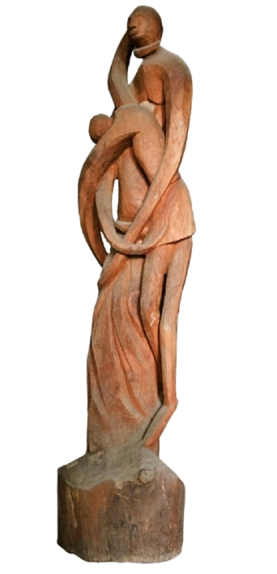
Unilib/Mus/SCU/11
Anthony Efionayi
Medium Wood carving sculpture
Height 122cm Year 1973
Location Museum Section, Main Library
Height 122cm Year 1973
Location Museum Section, Main Library
The Museum holds significant collections of artefacts which serves as a cultural center for the university community and beyond. Housed on the first floor of the Akintunde Ojo Building adjacent to the University Library.
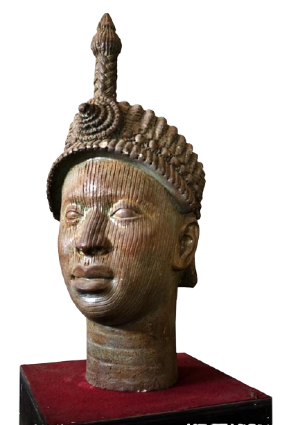
The museum’s growing collections include works of Yussuf Grillo, Uche Okeke, Bruce Onobrakpeya and other prominent Nigerian artists relating to post independence in Nigeria. The museum has in its holding over 123 artefacts.
Media represented include wood carving, reconstituted concrete, plaster of Paris, brass, metal repousse and painting.



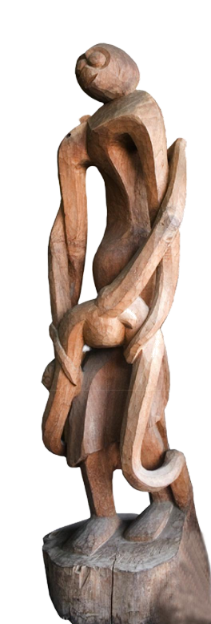
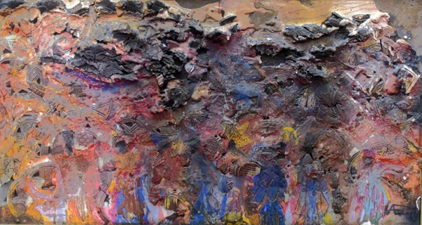
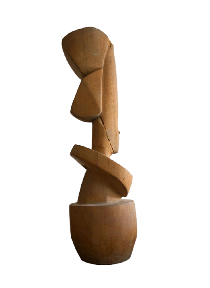
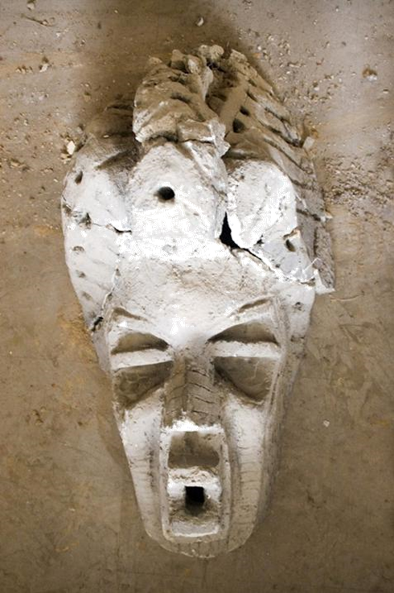
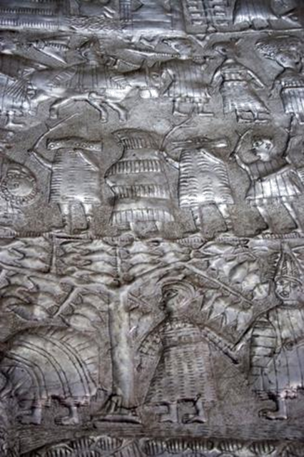
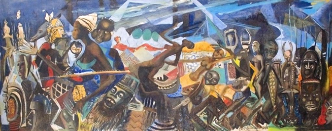
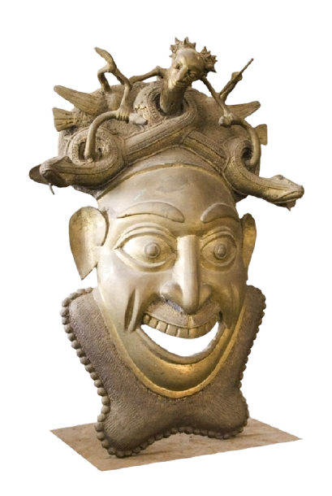
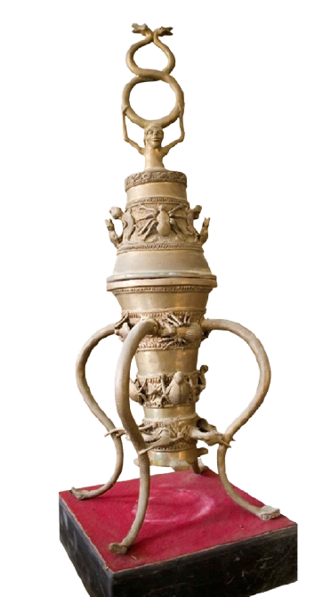
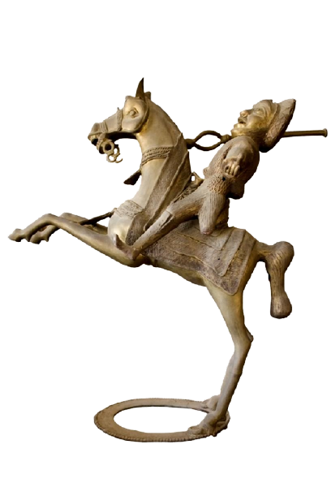
First floor, Akintunde Ojo Building, adjacent to the University Library.